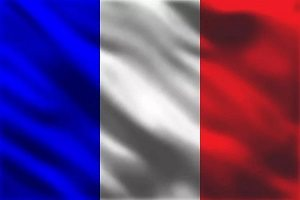
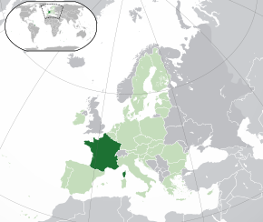
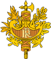
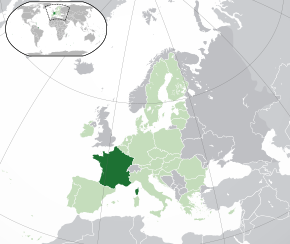

Franța
Liberté, Égalité, Fraternité

Franța este o republică constituțională, având un regim semi-prezidențial. Mare parte din teritoriul său și din populație este situată în Europa de Vest, dar care cuprinde și mai multe regiuni și teritorii răspândite în toată lumea.
Capitala sa este orașul Paris, limba oficială este franceza, iar moneda este euro.